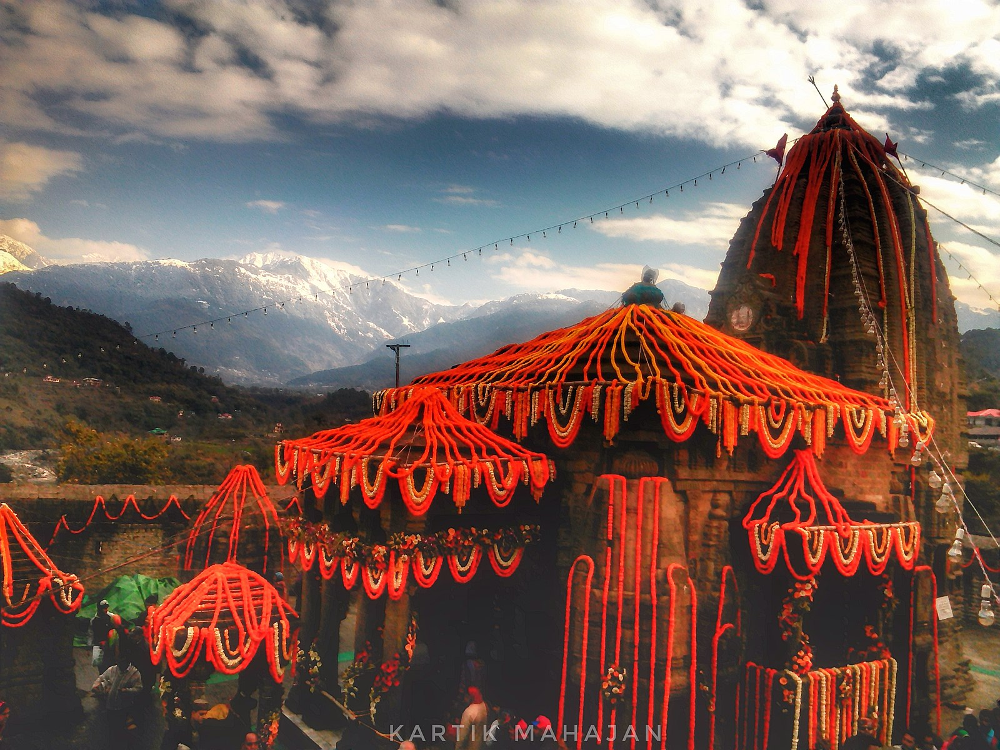
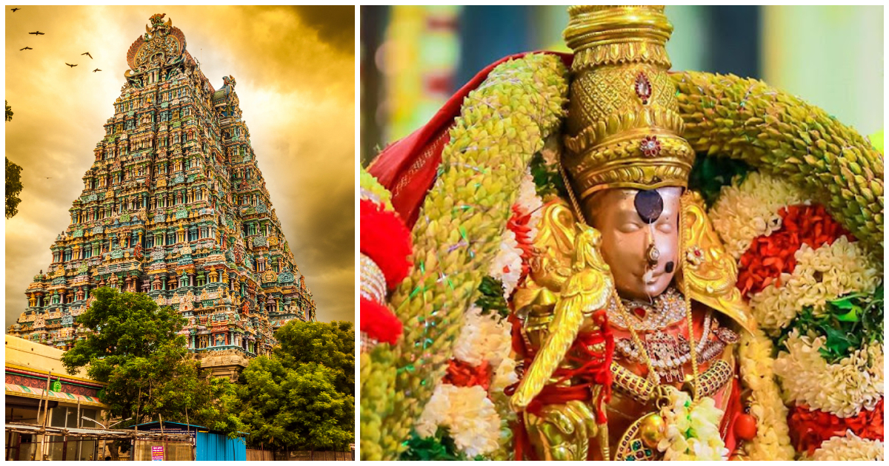
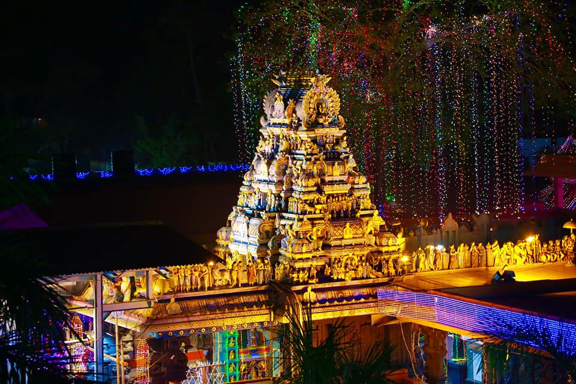
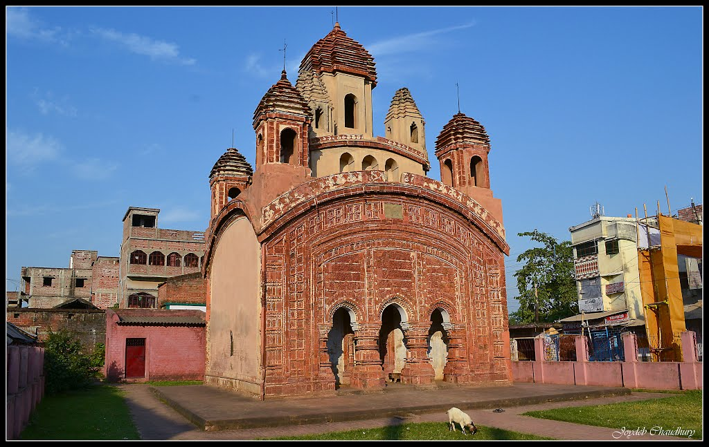

Increasing temperatures in April and May can result in excellent value trips, but you can expect high humidity and thunderstorms. Ladakh, located in the far north, is most accessible between June and September, when the rest of the country experiences monsoon season. The best time to travel in May to avoid busy traffic times is on weekdays in the middle of the month.The month of May is firmly in the middle of India’s blazing summer. Temperatures in both North and South India are at their peak, so it’s a good month to retreat to the mountains and escape the heat. While there won't be many foreign travelers to compete with, this is summer vacation in India and there's a spike in domestic tourism—you'll want to book your hilltop retreat in advance.
1' May -- Thrissur Pooram
The Thrissur Pooram is an annual Hindu temple festival held in Thrissur, Kerala, India. It is held at the Vadakkunnathan Temple in Thrissur every year on the Pooram day—the day when the moon rises with the Pooram star in the Malayalam Calendar month of Medam. It is the largest and most famous of all poorams in India.Thrissur Pooram is a symbolic meeting of deities of 10 temples in the region. While Thiruvambadi and Paramekkavu are the main participants of the 36-hour-long festival, other participating temples are Naithalakkavu, Ayyanthole, Karumukku, Lalur, Choorakkattukara, Chembukkavu, Kanimangalam and Panamukkumpally.
Golden temple
During Makar Sankranti, the Golden Temple is decorated with lights, and devotees flock to the temple to offer prayers and seek blessings. The Sikh community prepares and distributes a special sweet dish called "kada prasad" made of wheat flour, ghee, and sugar.
Devotees take a dip in the holy pond surrounding the temple, known as the "Sarovar," which is believed to have healing properties. The temple complex also hosts various cultural events and activities during Makar Sankranti.
Overall, Makar Sankranti is a time of joy and celebration at the Golden Temple, and it is an excellent opportunity for visitors to experience the rich cultural heritage and religious significance of this iconic Sikh shrine.
The Baijnath Temple
The Baijnath Temple is an ancient temple located in the town of Baijnath, in the Indian state of Himachal Pradesh. The temple is dedicated to Lord Shiva and is one of the significant attractions in the region. Makar Sankranti is a significant festival in Himachal Pradesh, and it is celebrated with great enthusiasm at the Baijnath Temple.
During Makar Sankranti, the Baijnath Temple is decorated with lights and colourful decorations, and thousands of devotees visit the temple to offer prayers and seek blessings. The festival marks the beginning of the harvesting season, and it is celebrated as a Thanksgiving event for the bountiful crops.
One of the unique features of Makar Sankranti at Baijnath Temple is the ritual of taking a dip in the hot springs near the temple. The hot springs are believed to have medicinal properties, and it is believed that taking a dip in the springs during Makar Sankranti can cure various ailments.
The festival is also marked by cultural events and activities, including folk music and dance performances, and the distribution of sweets and savouries. The festival provides an opportunity for visitors to experience the rich cultural heritage of Himachal Pradesh and to witness the festive spirit of the region.

30' May -- Ganga Dussera
The holy festival of Ganga Dussehra is celebrated on the tenth day of Shukla Paksha of Jyeshtha month. According to religious beliefs, on Jyeshtha Shukla Dashami, Mother Ganga had descended on the earth. He saved the ancestors of King Bhagirath, from which he attained salvation. We also know this day as Gangavataran.

The Meenakshi Amman Temple
The Meenakshi Amman Temple is a historic temple located in Madurai, Tamil Nadu, and is dedicated to Goddess Meenakshi, who is considered to be an avatar of Goddess Parvati. Pongal is a major festival in Tamil Nadu and is celebrated with great enthusiasm at the Meenakshi Amman Temple.
During Pongal, the temple is decorated with lights and colourful decorations, and thousands of devotees visit the temple to offer prayers and seek blessings. The festival is celebrated as a thanksgiving event for the bountiful harvest and is marked by the preparation of a special dish called 'Pongal', made of rice and lentils.
One of the significant attractions during Pongal at the Meenakshi Amman Temple is the Jallikattu event, which is a traditional bull-taming sport that is held in the temple premises. The event attracts a large number of visitors from across Tamil Nadu and is considered to be a symbol of bravery and valour.
The festival is also marked by cultural events and activities, including folk music and dance performances, and the distribution of sweets and savouries. The festival provides an opportunity for visitors to experience the rich cultural heritage of Tamil Nadu and to witness the festive spirit of the region.
Attukal Bhagavati Temple
Attukal Bhagavati Temple is a popular Hindu temple located in Thiruvananthapuram, the capital city of the Indian state of Kerala. The temple is dedicated to the goddess Bhagavati, who is considered to be the embodiment of female power and energy. Pongal is a major festival in Kerala and is celebrated with great enthusiasm at the Attukal Bhagavati Temple.
During Pongal, the temple is decorated with lights and colourful decorations, and thousands of devotees visit the temple to offer prayers and seek blessings. The festival is celebrated as a thanksgiving event for the bountiful harvest and is marked by the preparation of a special dish called 'Pongal', made of rice and lentils.
One of the unique features of Pongal at the Attukal Bhagavati Temple is the 'Pongala' ritual, which involves cooking the special Pongal dish in earthen pots, on the temple premises. The ritual is performed by women devotees, who gather in large numbers to offer their prayers and participate in the cooking ritual.
The festival is also marked by cultural events and activities, including traditional music and dance performances, and the distribution of sweets and savouries. The festival provides an opportunity for visitors to experience the rich cultural heritage of Kerala and to witness the festive spirit of the region.

31' May -- Nirjala Ekadashi
Nirjala Ekadashi is a widely celebrated festival in India. The day is dedicated to Lord Vishnu. It is celebrated on the 11th day of the fortnight according to Hindu calendar. This festival is also known as Pandav Bhim Ekadashi Fast.
The Radhabinod Temple
A famous Hindu temple dedicated to Lord Vishnu which was built in 1659 in Achala style of architecture. Today a lot of people visit this temple every day to view this architectural wonder.This is the earliest of the Eka-Ratna temples found in Bishnupur built in 1656 AD by king Raghunath Sinha. The architecture of this temple is quite astonishing which Comprising of a square ground arrangement and a solitary tower laying on a bent rooftop.

15' January -- Magh Bihu
Magh Bihu, also known as Bhogali Bihu, is a harvest festival celebrated in the Indian state of Assam. It is the second of the three Bihus celebrated in Assam, with the other two being Rongali Bihu (in April) and Kati Bihu (in October).
Magh Bihu is celebrated in mid-January, during the month of Magh in the Assamese calendar. The festival marks the end of the harvest season and the beginning of the new year in the Assamese calendar. It is a time for feasting, dancing, and merrymaking.
One of the main traditions of Magh Bihu is the building of 'mejis', which are temporary huts made of bamboo, wood, and hay. The mejis are set on fire on the night before the festival, as a symbol of burning away the old and making way for the new. People gather around the mejis, sing songs, and dance the traditional Bihu dance, called 'jhumur'.
Another important aspect of Magh Bihu is the feasting. People prepare traditional Assamese dishes, such as 'pitha' (rice cakes), 'laddu' (sweet balls), and 'laru' (sweet coconut balls). The food is cooked in large quantities and shared with family, friends, and neighbors.
Magh Bihu is a time for reunion and bonding with family and friends. It is also a time for thanking the gods for a bountiful harvest and seeking their blessings for the new year. The festival provides an opportunity for visitors to experience the rich cultural heritage of Assam and to witness the festive spirit of the region.
Harhi Dewaloi Temple
Harhi Dewaloi Temple is a popular Hindu temple located in the Sonitpur district of Assam, India. The temple is dedicated to goddess Durga, and it is a significant place of worship during the Magh Bihu festival.
During Magh Bihu, the Harhi Dewaloi Temple is decorated with lights and flowers, and thousands of devotees visit the temple to seek blessings and offer prayers to the goddess. The temple holds a special significance during the festival, as it is believed that the goddess Durga arrives here to bless her devotees during this time.
The festival is marked by the preparation of traditional Assamese dishes, such as 'pitha' and 'laru', which are made with rice, coconut, and jaggery. The food is prepared in large quantities and shared with family, friends, and visitors. People also participate in cultural events and activities, including traditional music and dance performances.
The temple is beautifully illuminated during the festival, and the atmosphere is filled with the sounds of devotional songs and the aroma of delicious food. Visitors can witness the colorful and vibrant festivities of the region and experience the rich cultural heritage of Assam.